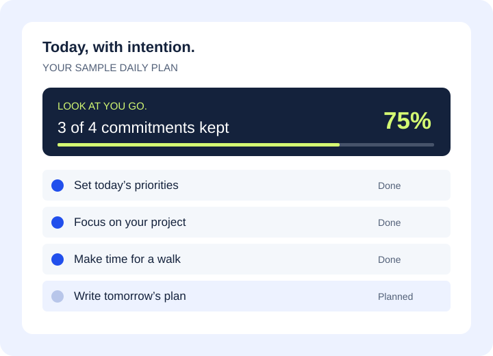
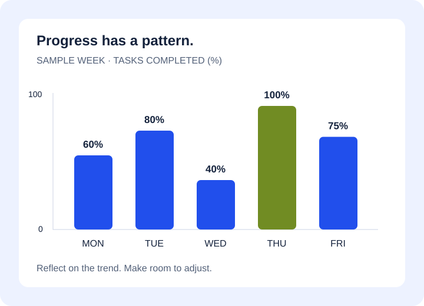
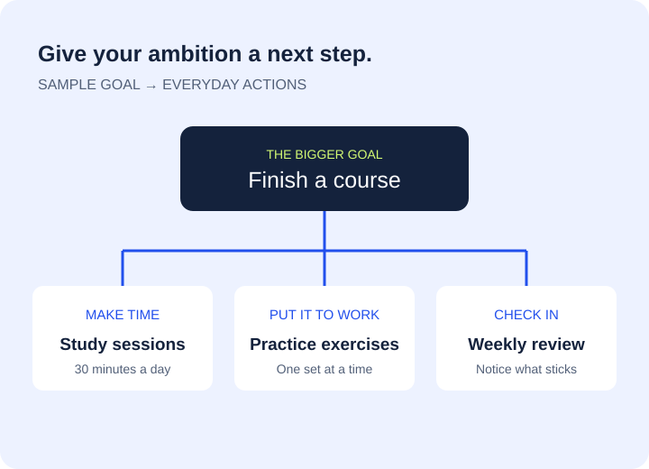
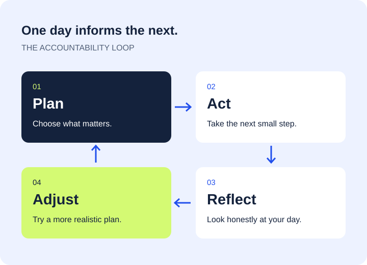

PICTURE A MORE INTENTIONAL DAY
See the plan.
See the progress.
A visual tour of the AccountaDay concept, from daily priorities to the bigger picture. Select an image for a closer look.


View imageYour day at a glance
A sample dashboard connects your plan to your progress.


View imageThe weekly perspective
Sample completion rates help you spot stronger days and changing routines.


View imageSmall actions. Bigger goals.
A simple goal map connects a long-term ambition with everyday actions.


View imageA routine that comes full circle
Plan, act, reflect, and adjust. Each day teaches you something about the next.
Original AccountaDay graphics. All figures are illustrative examples, not customer results.